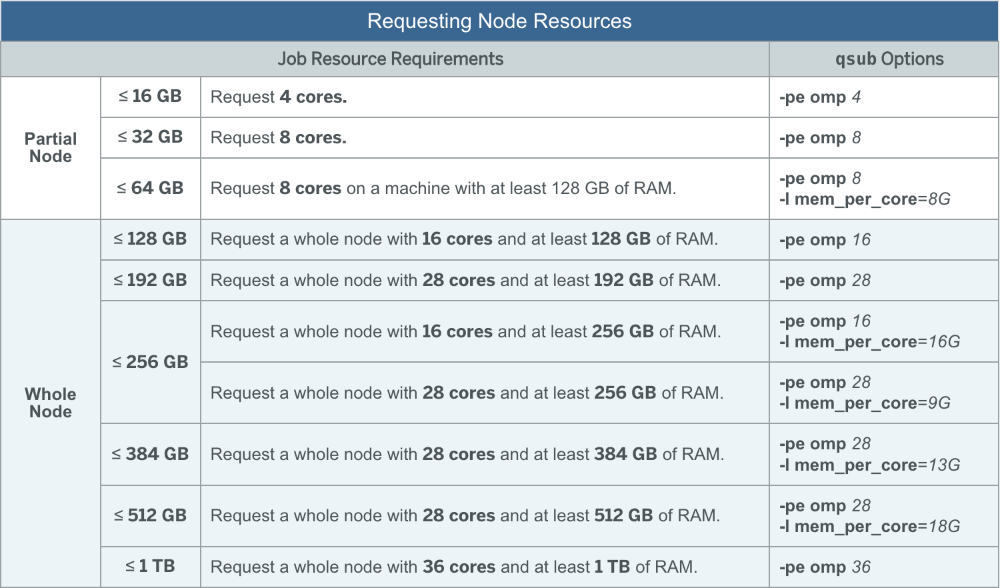

Week 4: RNAseq
Requesting the appropriate computing resources
N.B. To submit jobs to the scheduler, you will need to be on a head node.
When you are working in VSCode, you have spun up an instance on a compute node.
To run your workflows and submit via qsub, you will have to be on a head
node. In OnDemand, you can log onto a head node via the Login Nodes tab, you
should probably select scc1 or scc2.
Before we get into this week’s analysis, let’s briefly discuss the different options we have available to us on the SCC in terms of computing resources. Each node is essentially a computer with certain hardware specifications that we can run analyses on. In the modern day, these nodes and computers often have processors that contain multiple cores that can independently perform operations.
Certain tasks in bioinformatics can benefit from using multiple processing cores
on a computing node and / or require more memory. While each node on the SCC has
varying amounts of resources and slightly different technical specifications,
they are all generally quite powerful. The -pe omp flag in qsub is used to
request a certain number of cores with the scheduler. N.B. You still need to
request the same amount of cores in the command you are running. The -pe omp
flag simply makes the scheduler aware of how many cores you requested.
The omp PE is primarily intended for any jobs using multiple processors on a
single node. The value of N can be set to any number between 1 and 28 and can
also be set to 36. Use N=36 is to request a very large-memory (1024 GB) node. To
make best use of available resources on the SCC, the optimal choices are N=1, 4,
8, 16, 28, or 36.
https://www.bu.edu/tech/support/research/system-usage/running-jobs/parallel-batch/#peAs well as cores, certain jobs may require a specific amount of memory. As you know, storing information in RAM (random access memory) allows for much faster access and operations. When your jobs are scheduled and dispatched to the actual node, there is no actual restriction on the amount of RAM your task utilizes. However, we are on a shared computing cluster, and it is important to be respectful and every user is expected to follow “fair share” guidelines. Your job will likely be running on a node where other user’s tasks are also running, so it is important not to unduly monopolize these shared resources.
Memory options to the batch system are only enforced when the job is dispatched
to the node. Once the job has been dispatched, the batch system cannot enforce
any limits to the amount of memory the job uses on the node. Therefore each user
is expected to follow "fair share" guidelines when submitting jobs to the
cluster.
The memory on each node on the SCC is shared by all the jobs running on that
node. Therefore a single-processor job should not use more than the amount of
memory available per core (TotalMemory / NumCores where TotalMemory is the total
memory on the node and NumCores is the number of cores). For example on the
nodes with 128GB of memory and 16 cores, if the node is fully utilized, a
single-processor job is expected to use no more than 8GB of memory. See the
Technical Summary for the list of nodes and the memory available on each of
them.
https://www.bu.edu/tech/support/research/system-usage/running-jobs/resources-jobs/#memoryIn general, requesting more cores (more memory), will increase your queue time
as these more powerful nodes are usually in high demand by other users of the SCC.
For most of our class, you will not need to request more than 4 to 8 cores, which
also informally “requests” 16GB and 32GB of available RAM. As you work more with
data, you will develop your own sense for how many resources your tasks will
require, but for our datasets and use cases, we will generally not need to specify
anything higher than -pe omp 8.
Below, you can see a small table provided by the SCC that denotes common memory and processor requests and how to specify them:

Running your snakemake workflow on your full data
We have gone over how to run jobs on the cluster using qsub and the SGE scheduler,
and we will now need to swap from using the subsampled data to the full files in
order to generate a meaningful counts matrix for differential expression.
Copy the full data files to your
samples/directory. They are located in /projectnb/bf528/materials/project_1_rnaseq/full_files/Copy the full genome index to your
results/directory. It is located in /projectnb/bf528/materials/project_1_rnaseq/m39_star/. You should not use the m39_subset_star/ as that is an index for only chromosome 19.You will need to reformat your snakefiles slightly to make snakemake recognize the full files, and not the subsampled files. You should not need to change your wildcards. Do a quick dryrun to ensure that it is working on the full files.
You may want to add the -f flag to your previous multiqc command. The -f flag will ask multiqc to force overwrite any existing reports. This will allow you to generate a new report with the new samples. You may also consider removing the subsampled data and results if you want your reports to only include the full samples.
For week 2 specifically, please adjust your snakemake rule that runs STAR to resemble the one below.
A. We will be adding a threads directive to enable snakemake to request an
appropriate amount of resources for the specific job of alignment, a
computationally intensive task that also requires a large amount of memory.
B. You should also notice that we have updated our STAR command to request this
same number of cores by using the --runThreadN flag found in the manual. We
can keep our command neat by using the {threads} invocation in our command to
automatically substitute the number (8) specified in the threads directive.
rule star:
input:
r1 = 'samples/{name}_R1.fastq.gz',
r2 = 'samples/{name}_R2.fastq.gz',
star_dir = 'results/m39_subset_star/'
output:
bam = 'results/{name}.Aligned.out.bam'
params:
prefix = 'results/{name}.'
threads: 8
shell:
'''
STAR --runThreadN {threads} \
...other commands...
'''You may consider also using threads in your rule that runs VERSE, but this is not strictly necessary as it will run perfectly fine with a single core.
- Run each week’s snakefile on the full files. You will need to do these in
order and wait for the previous snakefile to finish. Remember that unless you are
utilizing
screenortmux, you will need to keep your internet connection and terminal where snakemake is running uninterrupted until snakemake is finished. In general, this is mostly a concern for week 2, which may take an extended period of time to finish (~30mins to 1hr).
Before you do this, you must run the following command with your conda environment active:
pip install snakemake-executor-plugin-cluster-generic
or
conda install -c conda-forge -c bioconda snakemake-executor-plugin-cluster-genericYou can use the same general command to run each week’s snakefile:
snakemake -s weekX.snake --executor cluster-generic --cluster-generic-submit-cmd "qsub -P bf528 -pe omp {threads}" --jobs #ofjobsThe important aspects in that command are the --executor cluster-generic
command which specifies which submit command to run. In our case, the SCC uses
the SGE cluster software to submit, queue and schedule jobs from many different
users. qsub is the primary command used by SGE to recognized jobs submitted by
users and the cluster-generic executor is snakemake’s plugin to handle SGE
commands. What follows the --cluster-generic-submit-cmd should be the qsub
command to request the appropriate amount of computational resources.
The -P is required to keep track of which projects are using what
computational resources. By specifying our group, bf528, the SCC knows to
attribute that usage to our group’s allotment of computing credits.
The -pe omp {threads} will tell snakemake to use the value specified in the
threads directive for each rule. For rules that do not have a threads
directive, this will default to 1. For our rule that runs STAR, snakemake will
now correctly request 8 cores (32gb of RAM), which is critical since alignment
is a processor and memory intensive process. All other rules will request a
single core, which is enough given their computational demands.
The --jobs will typically be set to the number of maximum number of jobs that
can occur at any one time. For example, in week 1, we wish to run FastQC on all
16 files, and so we may consider specifying the # of jobs to be 16, which will
request 16 separate nodes to run each of our fastQC tasks. These tasks can be
run in parallel since they are not dependent on any of the other files.
Snakemake will correctly handle cases where you need less than the specified
number of jobs. After all 16 FastQC jobs have finished, snakemake will only
submit a single job for MultiQC.
Remember that we are on a shared computing cluster. You should be mindful not to request too many resources at any one time. For our projects, you will be fine requesting as many jobs (nodes) as parallel tasks, but for your future projects, be mindful of the resources you request.
If you were able to successfully run week1.snake, week2.snake and week3.snake, you should have generated a filtered counts matrix of all 8 samples. This single counts matrix should contain 9 columns (8 samples, gene column).
If you used the gencode.vM34.primary_assembly.annotation.gtf, you should have a
total of 57,181 rows in the unfiltered matrix and 18,166 rows in the filtered
matrix.
If you used the gencode.vM33.primary_assembly.annotation.gtf, you should have a
total of 56,942 rows in the unfiltered matrix and 18,187 rows in the filtered
matrix.
If your numbers are slightly different, that’s OK, just ensure that your filtering is working as expected on the test data and continue onwards. There may be some slight version differences that cause small differences in the counts.
Performing differential expression
There are many ways to analyze time series data including the use of likelihood ratio tests or spline regression; however, since we have replicates at each time point, we can also treat these timepoints as factors and explicitly test for genes that differ between them. These other approaches like regression splines require careful interpretation of curves and choice of parameters.
We will instead be performing a simple differential expression analysis to compare the undifferentiated (p0) myocytes with the fully differentiated (AD). This will capture at least some of the major groups of genes changing over time and we will be using DESeq2, one of the more widely accepted tools for differential expression using counts data. DESeq2 automatically performs normalization using its median of ratios method, and uses generalized linear models to test for differential expression.
For the following analyses, work entirely in the provided Rmarkdown,
differential_expression.Rmd, and in an Rstudio session on scc. You will
primarily be following the instructions in the DESeq2 vignette. Use a
combination of tidyverse and base R to accomplish all the other listed tasks.
- Read the DESeq2 vignette and determine how to perform basic differential expression analyses using a counts matrix as input.
You will need to read in the counts matrix you generated, and create a dataframe
containing the sample information (coldata). For our experiment, in your coldata,
create a column called timepoint and include the timepoints for the various
samples. You do not need to include information about the replicate in this
coldata.
Perform differential expression comparing the P0 and AD timepoints, you should have results in the same format as the example found in the DESeq2 vignette. Save these results to a tibble. It should have the same number of rows as your filtered counts matrix.
Read in your delimited file containing the mapping of gene IDs and gene names into the same R session. Join the gene names to your results tibble and ensure that you preserve all of the original information in the results tibble. The goal is to end up with your results matrix from DESeq2 but with gene names instead of / or in addition to the gene IDs.
At the end of Week 3, you should have done the following:
Copied the full data to your
samples/directoryCopied the full star index m39_star/ to your
results/directorySlightly modify your snakefiles to run on the full files, not the subsampled files. Ensure your STAR rule is using the full STAR index.
You may want to add the -f flag to your previous multiqc command. The -f flag will ask multiqc to force overwrite any existing reports. This will allow you to generate a new report with the new samples. You may also consider removing the subsampled data and results if you want your reports to only include the full samples.
Run in order your week1, week2, and week3 snakefiles to completion on the full files
Perform differential expression comparing p0 and AD timepoints in the provided Rmarkdown and generate a tibble containing the results
Join the gene names into the results tibble while preserving all of the original information in the results